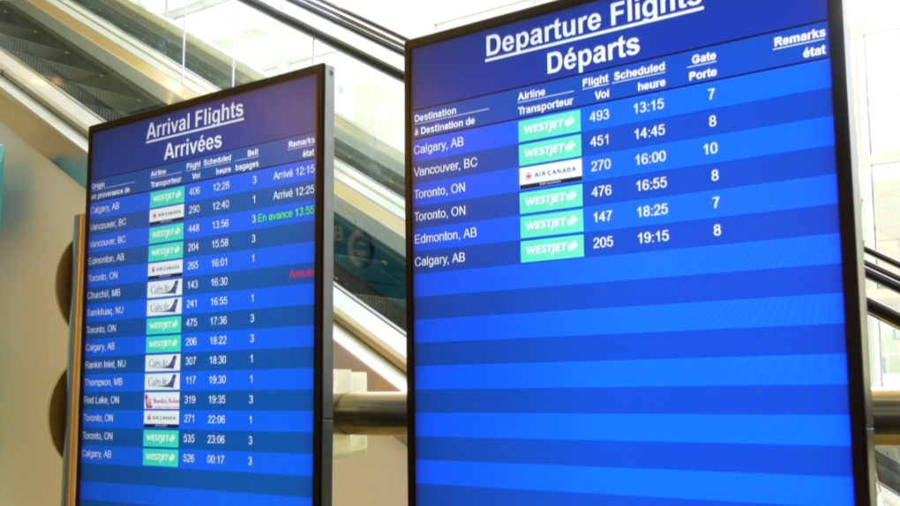
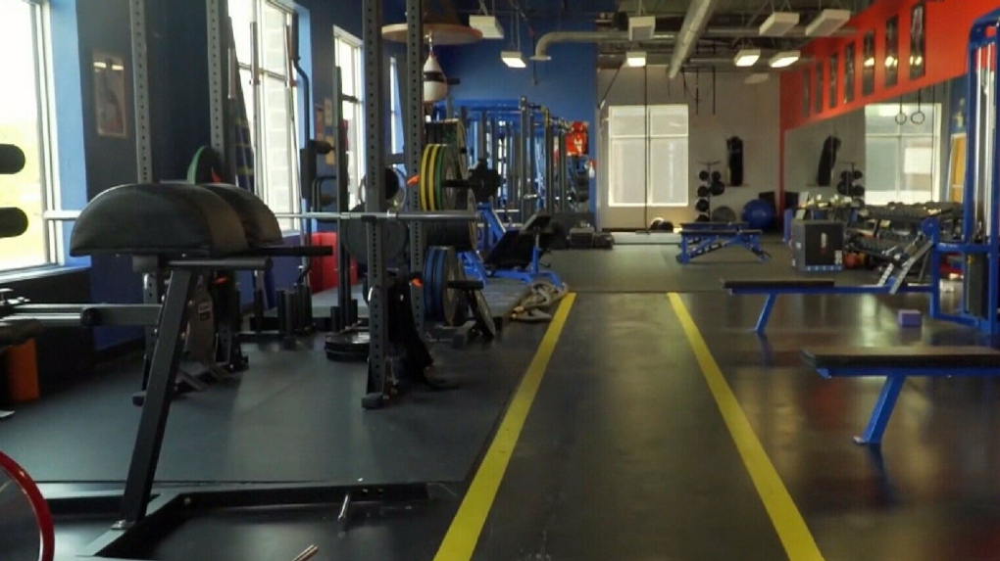

Manitoba premier amends interprovincial travel rules amid COVID-19 variant surge

WINNIPEG -- Manitoba's premier says the rules around travel are changing in the province as cases of COVID-19 variants begin to surge in Canada.
Read the full story on CTV news
More businesses could reopen in Manitoba under new proposed public health orders

P WINNIPEG -- Manitoba's premier and top doctor are eyeing further loosening of COVID-19 restrictions which could see restaurants, gyms and places of worship reopen.
Read the full story on CBC